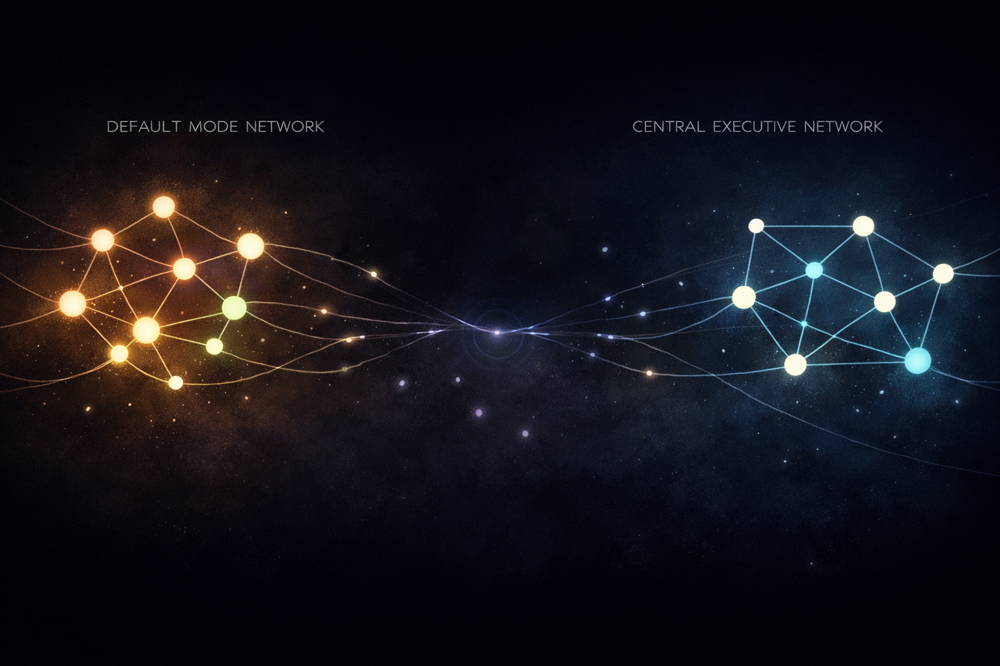
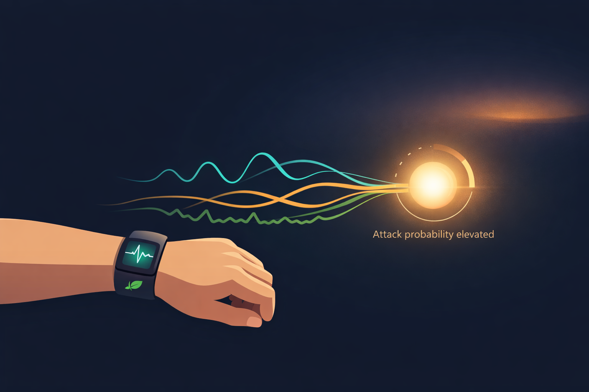

By Rustam Iuldashov
30 years lived experience with chronic migraine | Sources: 22 peer-reviewed references including The Journal of Headache and Pain, Neuropsychological Review, Cephalalgia, NeuroImage: Clinical | Last updated: March 24, 2026
Medical Review: This content is based on peer-reviewed research from The Journal of Headache and Pain, Neuropsychological Review, Journal of Clinical Medicine, NeuroImage: Clinical, Cephalalgia, Headache: The Journal of Head and Face Pain, Frontiers in Pain Research, and Nature Reviews Neurology.
Important Notice: This article is for informational purposes only and does not replace professional medical advice. The author is not a licensed physician or healthcare professional. Always consult your doctor before making any changes to your treatment plan.
Key Takeaways
- Cognitive dysfunction is the second-largest cause of disability in migraine — after pain — consistently affecting processing speed, working memory, attention, and executive function.[1][2]
- Cognitive deficits exist not just during attacks, but also during confirmed pain-free (interictal) periods, especially in people with chronic migraine.[3][4]
- Three core mechanisms are involved: cortical spreading depression disrupting hippocampal memory circuits; altered network connectivity in the Default Mode and Central Executive Networks; and accumulating white matter hyperintensities.[5][6][7][8]
- 44% of migraineurs show white matter hyperintensities on MRI — significantly higher than age-matched controls — with the greatest burden in those with aura and frequent attacks.[8][9]
- Preventive treatment doesn’t just reduce headache frequency; it can partially reverse structural brain changes and measurably improve cognitive test scores.[10][11]
- Machine learning is now reclassifying migraine by cognitive burden rather than headache day count — and beginning to predict attacks before symptoms appear.[12][13]
The Fog That Doesn’t Lift
You wake up the morning after a migraine. The pain is gone. You’re supposed to feel fine.
But you reach for a word — a simple, familiar word — and it isn’t there. You read the same sentence three times. You walk into a room and forget why. Your memory isn’t broken. Nothing is technically wrong.
And yet everything feels like it’s just slightly out of reach.
This isn’t anxiety. It isn’t age. It’s your brain — still reorganizing, still recovering — from a process that began long before the headache arrived and continues long after it’s gone.
For decades, migraine was defined almost entirely by pain. But researchers have spent the last ten years uncovering something more unsettling: migraine doesn’t just hurt. It changes the way your brain processes, stores, and retrieves information — even on the days when you feel completely fine.
The Second Problem Nobody Names
Cognitive dysfunction is the second largest cause of disability in people with migraine, after pain itself.[1] That’s not a fringe finding. It’s the conclusion of a 2024 narrative review in The Journal of Headache and Pain, produced by researchers across King’s College London, Vilnius University, and the European Headache Federation.[1]
The specific domains affected are consistent across studies: information processing speed, working memory, sustained attention, verbal fluency, and executive function.[1][2] These are not abstract neuropsychological categories. They are the skills you use to finish a sentence. To follow a conversation. To make a decision under pressure. To remember why you opened the email.
During an attack, the impairment is measurable and severe. Computerized cognitive tests show that working memory and reaction time both drop during the headache phase and the postdrome — the “migraine hangover” that follows pain.[1] One study found that scores on the Mini-Mental State Examination — a clinical tool used to screen for dementia — declined significantly during active attacks in patients who were perfectly healthy on their pain-free days.[1]
But the part that surprises most people isn’t the attack itself.
The Brain Between Attacks
The days and weeks between migraine episodes have always been assumed to be a cognitive safe zone. New evidence says that assumption is wrong.
A 2022 meta-analysis by Braganza and colleagues, published in Neuropsychological Review, synthesized data from multiple cohort studies testing migraineurs during headache-free periods.[3] The result: measurable interictal cognitive deficits — especially in processing speed and attention — exist in clinical migraine populations.[3] The brain between attacks is not restored to its baseline. It is altered.
A 2023 Spanish case-control study pressed further, testing 39 chronic migraine patients and 20 matched healthy controls during a confirmed pain-free period.[4] Migraine patients scored worse on sustained attention, processing speed, visuospatial memory, and verbal fluency.[4] Higher attack frequency correlated directly with worse cognitive performance — a dose-response pattern suggesting something is accumulating inside the brain with each episode.[2][4]
What exactly is accumulating?
Three Things Going Wrong at Once
The migraine brain is not simply a headache machine. It processes sensory information differently before, during, and after attacks — and those differences leave structural and functional traces.
Three mechanisms help explain why cognition suffers.
Cortical spreading depression. In migraine with aura, a slow wave of electrical depolarization — called cortical spreading depression, or CSD — sweeps across the brain, temporarily silencing entire cortical regions.[5] This wave can reach the hippocampus, disrupting the internal rhythms of the CA3 region, which is the brain’s gateway for encoding new memories.[5][6] Even without aura, researchers believe subtler versions of this neural disruption may interfere with cognitive network function across the migraine cycle.[6]
Altered network connectivity. Resting-state fMRI consistently reveals abnormal connectivity patterns in the migraine brain during pain-free periods. Two networks are particularly disrupted: the Default Mode Network — which handles episodic memory, social cognition, and mental time travel — and the Central Executive Network, responsible for working memory and complex attention.[7] In migraineurs, the connections between these networks and the insula are measurably altered, and the severity of that disruption correlates with migraine duration.[7]
White matter hyperintensities. A 2023 meta-analysis pooling 30 studies and 3,502 migraineurs found that 44% of migraine patients have white matter hyperintensities (WMHs) on brain MRI — a rate significantly higher than age-matched controls.[8] These are small areas of vascular damage in the brain’s white matter — the wiring that connects thinking regions to each other. WMHs are more common in those with aura, higher attack frequency, and longer migraine history.[8][9] A 2024 longitudinal study confirmed that migraine with aura is associated with faster WMH progression over time, particularly in women.[9]
Together, these three findings describe a brain that — over years and decades — is quietly being rewired.

Why Chronic Migraine Is Different
Not all migraine brains accumulate the same damage. Those with chronic migraine (15 or more headache days per month) show deeper structural changes than those with episodic migraine.
A 2025 longitudinal MRI study found that chronic migraine patients had reduced cortical surface area in regions including the precuneus, superior frontal gyrus, and supramarginal gyrus — areas critical for attention, self-referential processing, and language.[10] When those same patients improved to episodic migraine through treatment, some structural differences partially reversed.[10]
The brain is plastic. It responds to frequency.
A 2022 Spanish cohort study confirmed this directly: effective preventive treatment significantly improved objective neuropsychological test scores in chronic migraine patients.[11] Reducing attack frequency isn’t only about reducing pain. It’s about protecting the neural architecture of thought.
⚠️ When to Seek Emergency Care
Sudden severe confusion, abrupt memory loss, speech difficulty, or one-sided weakness occurring alongside or instead of your typical headache may indicate stroke or hemiplegic migraine — not standard migraine fog. Call emergency services immediately. People with migraine with aura have an elevated stroke risk compared to the general population.
Inform your neurologist urgently if your aura symptoms change in character, duration, or frequency, or if you develop any new neurological symptoms.
When the Machine Starts Watching
Here’s where this story enters new territory.
A 2024 Argentine study used machine learning combined with voxel-based morphometry — a technique that maps tiny differences in brain structure — to classify migraine patients by cognitive burden rather than by headache day count.[12] The finding was striking: cognitive and psychological alterations predicted migraine disability more accurately than the standard diagnostic threshold of 15 headache days per month.[12]
That means your headache calendar may be a poor proxy for how much migraine is actually costing your brain. Two people with identical headache diaries might have profoundly different cognitive profiles — and very different levels of invisible, daily impairment.
Separately, a 2023 Norwegian study trained machine learning models on wearable sensor data — heart rate, skin temperature, EMG — combined with daily mobile diary entries.[13] The best-performing model, a random forest classifier, could predict next-day migraine attacks with meaningful accuracy.[13] The future being built here is one where your phone knows a migraine is coming before you do — and where early intervention becomes possible.
For those of us who have lived with migraine for 30 years, as I have, none of this is abstract.
Every lost word, every derailed thought, every meeting you half-survived while pretending to be fine — it’s all documented somewhere in this research. Knowing it’s real. Knowing it has a biological explanation and not a character flaw. That matters more than it might seem.

What You Can Do
The research points to clear, actionable directions.
Reduce Attack Frequency
This is the single most powerful intervention. More attacks, more cognitive impact — consistently, across studies. Every evidence-based preventive strategy — CGRP inhibitors, topiramate, lifestyle approaches — also protects cognition, not just pain tolerance.[11]
Track Brain Fog Alongside Pain
Standard headache diaries miss the cognitive picture entirely. If word-finding difficulty, attention failures, or mental fog are part of your pattern, record them. They are clinically meaningful data that can inform your treatment and strengthen your case with a neurologist.[12]
Protect Your Sleep
The networks most disrupted by migraine — the Default Mode and Central Executive Networks — are profoundly sleep-sensitive. Consistent sleep schedules support the same systems that migraine destabilizes.[1] Sleep is not passive recovery. For the migraine brain, it is active maintenance.
Stop Treating Fog as Failure
The scattered, slow-motion feeling many migraineurs experience between attacks has a name, a mechanism, and a body of peer-reviewed research behind it. You are not distracted. You are neurologically interrupted. The distinction matters — for how you treat yourself, and for how you communicate your experience to the people around you.
⚕️ Important Medical Disclaimer
This article is for informational and educational purposes only and does not constitute medical advice, diagnosis, or treatment. The author, Rustam Iuldashov, is not a licensed physician, neurologist, or healthcare professional. He is a patient advocate with 30 years of personal experience living with chronic migraine.
All clinical claims in this article are sourced from peer-reviewed research published in indexed medical journals. Study designs and sample sizes are noted where applicable.
Always consult a qualified healthcare provider for questions about your individual health, migraine treatment, or medication decisions. Never start, stop, or switch preventive migraine medications without discussing it with your doctor first.
People with migraine with aura carry an elevated risk of ischemic stroke. If you experience sudden cognitive changes, speech difficulty, vision loss, or one-sided weakness, seek emergency medical attention immediately. This content was last reviewed for accuracy on March 24, 2026.
References
- Fernandes C, Dapkute A, Watson E, et al. “Migraine and cognitive dysfunction: a narrative review.” J Headache Pain, 25:221 (2024). doi:10.1186/s10194-024-01923-y. Study design: Narrative review. European Headache Federation School of Advanced Studies.
- Vuralli D, Karatas H, Yemisci M, et al. “Cognitive dysfunction and migraine.” J Headache Pain, 19:109 (2018). doi:10.1186/s10194-018-0933-4. Study design: Systematic review. n=multiple clinical cohorts.
- Braganza DL, Fitzpatrick LE, Nguyen ML, Crowe SF. “Interictal cognitive deficits in migraine sufferers: a meta-analysis.” Neuropsychol Rev, 32:736–757 (2022). doi:10.1007/s11065-021-09516-1. Study design: Meta-analysis.
- Lozano-Soto E, Cruz-Gómez ÁJ, Rashid-López R, et al. “Neuropsychological and neuropsychiatric features of chronic migraine patients during the interictal phase.” J Clin Med, 12:523 (2023). doi:10.3390/jcm12020523. Study design: Case-control. n=59.
- Tanaka M, Tuka B, Vécsei L. “Navigating the neurobiology of migraine: from pathways to potential therapies.” Cells, 13:1098 (2024). doi:10.3390/cells13131098. Study design: Narrative review.
- Wang Y, Shan Z, Zhang L, et al. “P2x7r/NLRP3 signaling pathway-mediated pyroptosis and neuroinflammation contributed to cognitive impairment in a mouse model of migraine.” J Headache Pain, 23:75 (2022). doi:10.1186/s10194-022-01394-z. Study design: Animal model study.
- Fernandes C, Gil-Gouveia R. “Deciphering the mechanisms: pathophysiology of migraine-related cognitive dysfunction.” Cephalalgia, 45:1–14 (2025). doi:10.1177/03331024251368328. Study design: Narrative review with neuroimaging synthesis.
- Zhang Q, Xie H, Yang J, et al. “Prevalence and clinical characteristics of white matter hyperintensities in migraine: a meta-analysis.” NeuroImage: Clinical, 37:103335 (2023). doi:10.1016/j.nicl.2023.103335. Study design: Meta-analysis. n=3,502.
- Schramm SH, Tenhagen I, Jokisch M, et al. “Migraine or any headaches and white matter hyperintensities and their progression in women and men.” J Headache Pain, 25:78 (2024). doi:10.1186/s10194-024-01782-7. Study design: Longitudinal cohort (1000BRAINS study).
- Planchuelo-Gómez Á, et al. “Long-term evolution of white and gray matter structural properties in migraine.” Headache, published 2025. doi:10.1111/head.14902. Study design: Longitudinal cohort. n=79.
- González-Mingot C, Gil-Sánchez A, Canudes-Solans M, et al. “Preventive treatment can reverse cognitive impairment in chronic migraine.” J Headache Pain, 23:1–12 (2022). doi:10.1186/s10194-022-01486-w. Study design: Prospective cohort.
- Castro Zamparella T, Carpinella M, Peres M, et al. “Specific cognitive and psychological alterations are more strongly linked to increased migraine disability than chronic migraine diagnosis.” J Headache Pain, 25:37 (2024). doi:10.1186/s10194-024-01734-1. Study design: Machine learning-augmented cross-sectional study with VBM.
- Stubberud A, Ingvaldsen SH, Brenner E, et al. “Forecasting migraine with machine learning based on mobile phone diary and wearable data.” Cephalalgia, 43:1–10 (2023). doi:10.1177/03331024231169244. Study design: Prospective pilot. n=18.
- Petrušić I, Savić A, Mitrović K, et al. “Machine learning classification meets migraine: recommendations for study evaluation.” J Headache Pain, 25:215 (2024). doi:10.1186/s10194-024-01924-x. Study design: Methodological review.
- Petrušić I, Ha W-S, Labastida-Ramirez A, et al. “Influence of next-generation artificial intelligence on headache research, diagnosis and treatment: part 1.” J Headache Pain, 25:151 (2024). doi:10.1186/s10194-024-01847-7. Study design: Review.
- Steiner TJ, Stovner LJ. “Global epidemiology of migraine and its implications for public health and health policy.” Nat Rev Neurol, 19:109–117 (2023). doi:10.1038/s41582-022-00763-1. Study design: Epidemiological review.
- Safiri S, Pourfathi H, Eagan A, et al. “Global, regional, and national burden of migraine in 204 countries and territories, 1990 to 2019.” Pain, 163:e293–e309 (2022). doi:10.1097/j.pain.0000000000002275. Study design: Global burden of disease analysis.
- O’Hare L, Tarasi L, Asher JM, et al. “Excitation-inhibition imbalance in migraine: from neurotransmitters to brain oscillations.” IJMS, 24:10093 (2023). doi:10.3390/ijms241210093. Study design: Narrative review.
- Chong CD, Schwedt TJ, Trivedi M, Chong BW. “The characteristics of white matter hyperintensities in patients with migraine.” Front Pain Res, 3:852916 (2022). doi:10.3389/fpain.2022.852916. Study design: Retrospective cohort. n=263.
- Dong L, Fan X, Fan Y, et al. “Impairments to the multisensory integration brain regions during migraine chronification.” Front Mol Neurosci, 16:1153641 (2023). doi:10.3389/fnmol.2023.1153641. Study design: Cross-sectional fMRI study.
- Hsiao FJ, Chen WT, Wu YT, et al. “Characteristic oscillatory brain networks for predicting patients with chronic migraine.” J Headache Pain, 24:139 (2023). doi:10.1186/s10194-023-01668-0. Study design: Machine learning classification study.
- Kapustynska V, Abromavicius V, Serackis A, et al. “Machine learning and wearable technology: monitoring changes in biomedical signal patterns during pre-migraine nights.” Healthcare, 12:1701 (2024). doi:10.3390/healthcare12171701. Study design: Prospective pilot study.

How We Create Content
- Peer-reviewed sources only. The Journal of Headache and Pain, Neuropsychological Review, Journal of Clinical Medicine, NeuroImage: Clinical, Cephalalgia, Headache: The Journal of Head and Face Pain, Frontiers in Pain Research, Nature Reviews Neurology, Healthcare (MDPI).
- Study transparency. Study design and sample sizes noted for all clinical references.
- Source verification. All claims backed by numbered references with DOI links.
- Experience + Science. 30 years personal migraine experience combined with peer-reviewed evidence.
- Regular updates. Articles reviewed when significant new research emerges.
- No conflicts of interest. No funding from any pharmaceutical or supplement company referenced in this article.
Track Your Brain, Not Just Your Pain
Migraine Companion lets you log cognitive symptoms — brain fog, word-finding difficulty, focus — alongside headache data. Build the full picture of your migraine burden to share with your neurologist.
Last reviewed: March 2026
Next scheduled review: September 2026